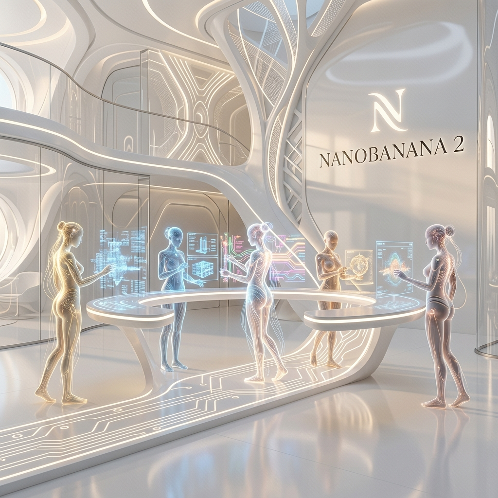
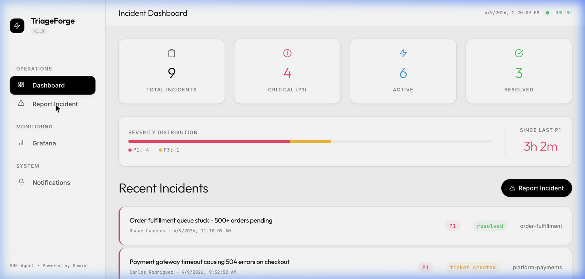

Trinity accelerates root-cause analysis by reading code, docs, and visual state—delivering instant context when seconds matter.
When a P1 fires at 3 AM, oncall engineers spend 10–30 minutes identifying affected services, searching for related code, and checking for known issues before they even begin fixing the problem.
Logs, traces, codebases, and runbooks exist in disconnected silos. Correlating them takes precious time.
A single outage can trigger dozens of duplicate alerts, overwhelming the triage queue with noise.
Different services require different domain experts. Routing an incident to the wrong team wastes critical minutes.
Trinity automates the entire triage workflow. Our 5-agent LangGraph pipeline synthesizes all signals into actionable insights instantly.

Powered by WebSockets, Trinity's intuitive dashboard reveals agent states and severity distributions live—no refreshing required.

Trinity searches the actual codebase (via ChromaDB RAG index) to identify root cause hypotheses with confidence scores.
Upload a screenshot. Our Multimodal Gemini agent reads error messages, stack traces, and UI state directly from the image.
Built-in prompt injection detection, PII scrubbing, and full OpenTelemetry distributed tracing.
A single `docker compose up` provisions the entire 10-service stack including Grafana, PostgreSQL, and FastAPI backend.